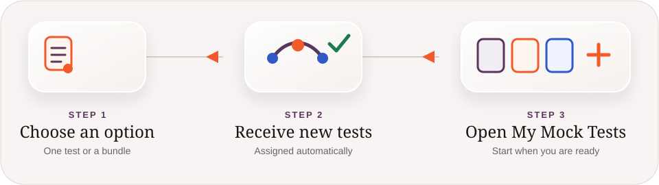

IELTS Academic · free during launch
Practise the complete test with a clearer plan.
Realistic IELTS Academic mock tests for learners preparing across Reading, Listening, Writing and Speaking. Start with one test or get a bundle for a longer study plan.
Designed for independent learners, language schools and university preparation programmes.
Four skills. Familiar test flow. Feedback released at the right time.
Start here
Three clear ways forward.
Explore the IELTS Academic collection, compare bundle sizes, or return to tests already in your library.
The pilot collection
Ten IELTS Academic mock tests.
Each test brings Reading, Listening, Writing and Speaking into one considered preparation experience. Test content here is original and illustrative.
Flexible preparation
Start with one test or get a bundle.
Your tests are assigned automatically. We check your library first, so you never receive the same test twice.
How access works
New tests, without duplicates.
Choose the amount of preparation you need. The platform checks your library, assigns eligible new tests, and then shows them in My Mock Tests.
- Your existing tests stay in your library.
- A test is never assigned to your account twice.
- During launch, published pilot tests are free.

Returning learner
Your next test is waiting.
Open My Mock Tests to continue an assessment, check teacher-feedback status or review released results.
More exams coming later
IELTS Academic is the active pilot.